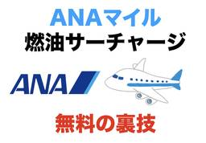
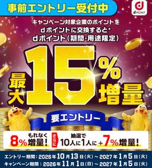

陸マイラー ピピノブのANAのマイルで旅ブログ
https://www.pipinobu.com
陸マイラーのピピノブが、飛行機に乗らずに貯めたマイルで世界中を旅するブログです。大量マイルの貯め方から、旅行記、ホテル宿泊記などをお届けしています。
フィード
【2026年最新】燃油サーチャージとは？ANAとJALの最新情報から節約術、裏技まで完全ガイド！
陸マイラー ピピノブのANAのマイルで旅ブログ
海外旅行や出張で航空券を予約した際、思ったより高額な請求に驚いたことはありませんか？その原因のひとつが、航空券の基本運賃とは別に加算される 「燃油サーチャージ」 、いわゆる「燃油代」です。当記事では、燃油サーチャージの意 ...
2日前

ANAマイルで燃油サーチャージを無料する裏技！回避する方法とおすすめの航空会社を徹底解説！
陸マイラー ピピノブのANAのマイルで旅ブログ
ANAマイルで燃油サーチャージを無料する裏技！回避する方法とおすすめの航空会社を徹底解説！ ANAマイルを使えば特典航空券を発券してお得な海外旅行を実現できます。これは真実ですが大きな落とし穴があります。それは、燃油サー ...
2日前
JALマイルで燃油サーチャージなしの航空会社は？燃油代を無料にする裏技を徹底解説！
陸マイラー ピピノブのANAのマイルで旅ブログ
JALマイルで燃油サーチャージなしの航空会社は？燃油代を無料にする裏技を徹底解説！ JALマイルを使って特典航空券を予約しようとしたとき「マイルで無料のはずなのに、数万円の支払いが必要だった…」そんな経験はありませんか？ ...
2日前
PontaポイントからJALマイルへ交換レート25％アップキャンペーン！＜2026年12月31日まで＞
陸マイラー ピピノブのANAのマイルで旅ブログ
リクルートが中心になって展開する共通ポイントの一角である「Ponta（ポンタ）」。そのPontaポイントからJALマイルへの交換レートアップのキャンペーンがスタートします。交換レートが通常の50％から62％に12％アップ ...
3日前
ゴールドカードセゾンはポイントサイト経由の入会がお得！初年度年会費無料で10,000円相当の特典獲得！
陸マイラー ピピノブのANAのマイルで旅ブログ
ゴールドカードセゾンはポイントサイト経由の入会がお得！初年度年会費無料で10,000円相当の特典獲得！ クレディセゾンの「ゴールドカードセゾン」に入会するならポイントサイト経由がお得です。ポイントサイト経由で10,000 ...
3日前

今週の「ANAトクたびマイル」はどこ？予約方法から注意点、メリット、デメリットを解説！
陸マイラー ピピノブのANAのマイルで旅ブログ
今週の「ANAトクたびマイル」はどこ？予約方法から注意点、メリット、デメリットを解説！ 「トクたびマイル」はANA国内線特典航空券を通常よりも少ないマイル数で予約できるキャンペーンです。片道で3,000マイル、往復なら6 ...
4日前
三菱UFJ eスマート証券（旧auカブコム証券）はポイントサイト経由の口座開設がお得！17,000円分の特典獲得！
陸マイラー ピピノブのANAのマイルで旅ブログ
三菱UFJ eスマート証券（旧auカブコム証券）はポイントサイト経由の口座開設がお得！ ポイントサイトのモッピーで「三菱UFJ eスマート証券（旧auカブコム証券）」の口座開設キャンペーンを実施中です。モッピー を経由し ...
4日前

dポイント増量キャンペーンが11月1日スタート！もれなく8％＋抽選で7％増量は驚きの錬金術！＜2026年最新＞
陸マイラー ピピノブのANAのマイルで旅ブログ
dポイント増量キャンペーンが11月1日スタート！もれなく8％＋抽選で7％増量は驚きの錬金術！＜2026年最新＞ 「dポイント増量キャンペーン」が2026年11月1日からスタートします。キャンペーン期間中に対象企業のポイン ...
5日前
フェアモント東京のクラブラウンジを徹底レポート！朝食からアフタヌーンティー、カクテルタイムまで！
陸マイラー ピピノブのANAのマイルで旅ブログ
フェアモント東京に宿泊した際、42階にある「フェアモントゴールド ラウンジ」を利用してきました。こちらは一般的には「クラブラウンジ」と呼ばれる施設です。ラウンジでは、朝食、リフレッシュメント、アフタヌーンティー、イブニン ...
6日前
三菱UFJ銀行の口座開設はポイントサイト経由がお得！最大42,500円分の特典獲得！
陸マイラー ピピノブのANAのマイルで旅ブログ
三菱UFJ銀行の口座開設はポイントサイト経由がお得！最大42,500円分の特典獲得！ 三菱UFJ銀行の口座開設は今がチャンスです。ポイントサイト経由で20,000円分、三菱UFJ銀行のキャンペーンで20,000円分、紹介 ...
7日前